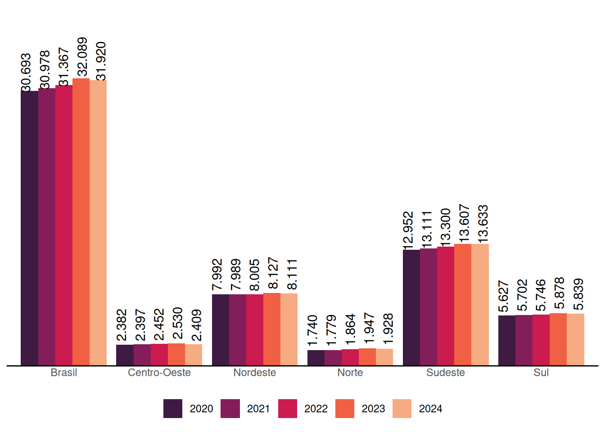
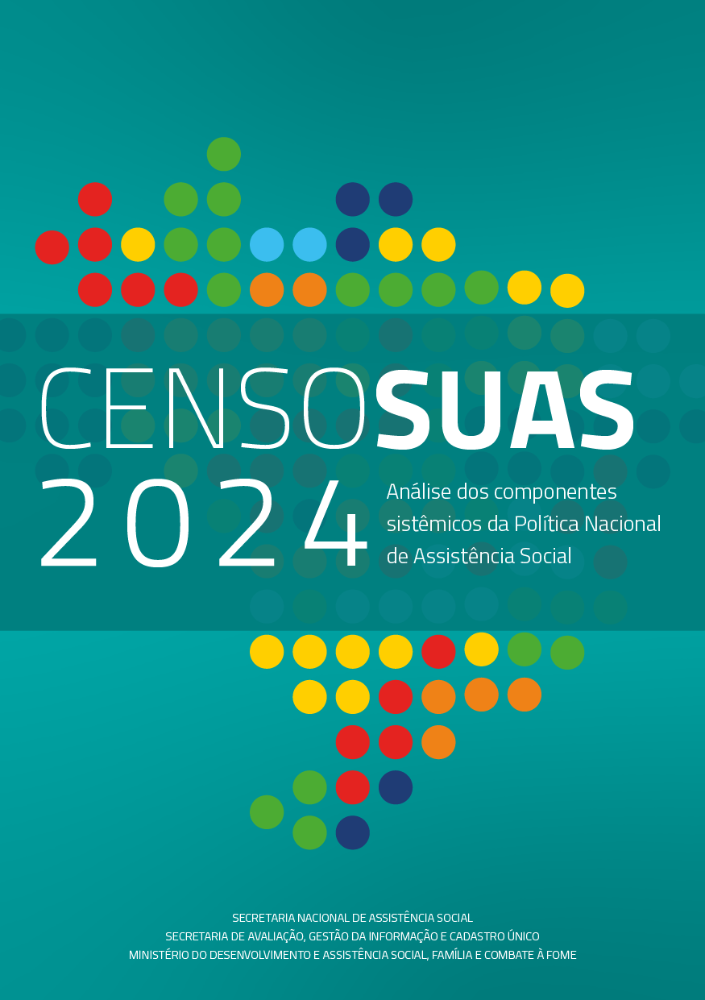
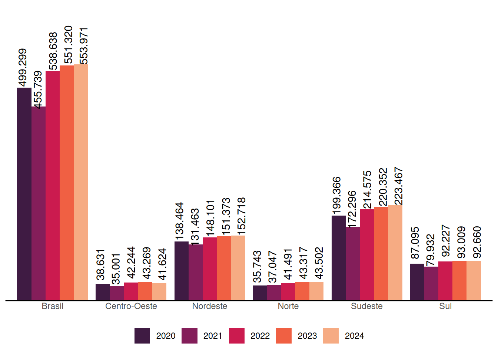

CENSO SUAS 2024
Análise dos componentes sistêmicos da Política Nacional de Assistência Social
Apresentação

Integrante do tripé da Seguridade Social, ao lado das políticas de Saúde e de Previdência Social, a Assistência Social constitui-se como um direito do cidadão e um dever do Estado. Como toda política pública, o SUAS encontra-se em permanente processo de aprimoramento, exigindo atualizações e adequações contínuas diante das transformações sociais e das novas demandas da conjuntura.
O Censo SUAS constitui o retrato mais abrangente, consistente e sistemático da Assistência Social no Brasil. Previsto no Decreto nº 7.334/2010, consolida-se como instrumento essencial de monitoramento e avaliação da política. A publicação anual de seus resultados busca oferecer um conjunto qualificado de análises e reflexões que contribuam para o aprimoramento contínuo e o fortalecimento histórico do SUAS, além de evidenciar avanços, identificar desafios e apontar caminhos para os rumos e pactos que orientam a política de Assistência Social em todo o país.
O Censo SUAS 2024 registrou uma rede com 31.920 unidades públicas (Gráfico 1), incluindo unidades governamentais e Organizações da Sociedade Civil (OSCs), rede que é composta por:
- CRAS (Centro de Referência em Assistência Social),
- CREAS (Centro de Referência Especializado em Assistência Social),
- Centro POP (Centro de Referência Especializado para Pessoas em Situação de Rua),
- Unidades de Acolhimento,
- Centro de Convivência (unidades que executam Serviço de Convivência e Fortalecimento de Vínculos, exceto CRAS),
- Centro Dia e similares,
- Unidades executoras do Serviço de Acolhimento em Família Acolhedora e
- Posto de Cadastro Único (locais com a finalidade central de realizar inclusão ou atualização cadastral do Cadastro Único e procedimentos afins).
O Censo SUAS 2024 registrou também 553.971 trabalhadoras e trabalhadores (Gráfico 2), quantidade formada pelas trabalhadoras e trabalhadores nas unidades públicas listadas acima, mais as trabalhadoras e trabalhadores:
- da Gestão Municipal (Secretaria Municipal de Assistência Social ou congênere) e da Gestão Estadual (Secretaria Estadual de Assistência Social ou congênere),
- do Fundo Municipal de Assistência Social e do Fundo Estadual de Assistência Social e
- dos Conselhos Municipais e Estaduais de Assistência Social e CAS/DF.
Trata-se de um sistema federativo e participativo, no qual as responsabilidades são compartilhadas entre os três entes federados, sob a direção e deliberação do controle social.

A Tabela 1 apresenta o marco normativo que institucionaliza e orienta a conformação desta política pública.
| 1988 | Constituição Federal (Art. 203) |
| 1993 | LOAS |
| 2001 | Cadastro Único |
| 2003 | Programa Bolsa Família |
| 2004 | PNAS |
| 2005 | NOB/SUAS |
| 2006 | NOB-RH/SUAS |
| 2009 | Tipificação dos Serviços |
| 2011 | Lei 12.435 SUAS |
| 2012 | NOB/SUAS |
| 2016 | II Plano Decenal |
São referências essenciais que sustentam o debate apresentado nesta edição. O conteúdo desta publicação traz uma linha histórica — em grande parte a partir de 2012 — que evidencia aspectos relacionados à gestão, às unidades do SUAS, aos serviços e benefícios, à gestão do trabalho, ao controle social e à participação. Além disso, inclui elementos metodológicos que demonstram os avanços na construção dessa linha histórica de forma cada vez mais qualificada, com modernização nos processos de análise e tratamento de dados.
Desejamos uma boa leitura e esperamos que esta edição contribua para subsidiar debates qualificados, fortalecendo o aprimoramento contínuo desta política pública.